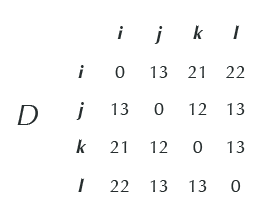
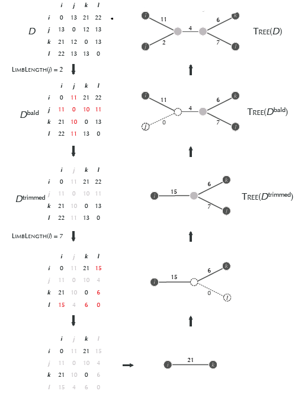
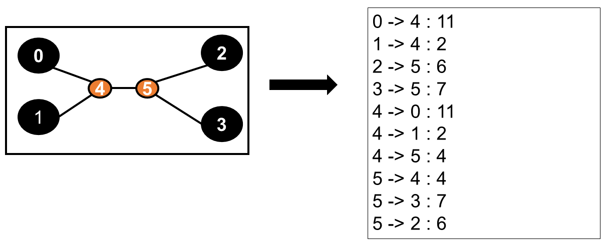

This work-in-progress implementation is part of a contribution by Vanessa Leidel that aims to implement Additive Phylogeny from Bioinformatics algorithms (Compeau & Pevzner). The first half has already been solved, but the back-stepping procedure is still missing.
Additive Phylogeny is a distance based approach to construct phylogenetic trees from an additive distance matrix. A distancematrix is the representation of nodes (species) and edges (distances between species) as a table and is additive, if you can recieve a unique simple unrooted tree fitting the distance matrix. Real world problems are mostly non additive, but parts of analyzing this problems are very similar to the additive phylogeny approaches (e.g. determining limb length). For this reason the implementation of the method additive Phylogeny is an important step in understanding computing evolutionary phylogenetic trees and solving special cases of real world problems
#r "nuget: FSharp.Stats, 0.5.0"
#r "nuget: FSharp.Data, 6.2.0"
open FSharp.Data
open FSharp.Stats
open System.Collections.Generic
Before we start to implement the additive distance matrix approach, we create distance matrices and proof them on additivity. In this case the additive matrice needs to be symmetric and has indices representing the species (columnnumber / rownumber) and the values in the rows / columns representing the distance between two species. For example, if we start with the following matrix, than row j has indice one and the distance between j and i is 13. This matrices can be translated in coding language by creating a type DistanceMatrix, that has member species and DistanceM and a static member create to create the matrix.
// Dieser Typ soll die Distanzmatrix in Form eines Codes darstellen können, so dass auf die einzelnen Elemente zugegriffen werden kann.
// Species representiert dabei jeweils den Column/RowNamen und wird für die eigentliche Analyse nicht benötigt
// DistanceM representiert die eigentliche Distanzmatrix und ist vom Typ matrix
// Create ist notwendig um ein Element von diesem Typen zu erstellen
type DistanceMatrix<'a> = {
Species : string []
DistanceM : matrix
} with
static member Create species distanceM = {Species=species; DistanceM=distanceM}
In the following we create three different matrices to proof the functions for functionality.
This are myMatrixAdditive (a 44 matrice), twentyNineMatrix (2929 matrice) and non-additive matrice (4*4).
The first matrix was taken from chapter 7 of the book "Bioinformatics Algorithms: An Active Learning Approach", which describes the additive matrices approach and other phylogenetic methods.
The second matrix was taken as an example from the Rosalind page associated with the book.
The third matrix is self-made.
// Dieser Block kreiert eine 4*4 matrix, die aus dem Kapitel 7 des Buches "Bioinformatics Algorithms: An Active Learning Approach" entnommen wurde.
// Dabei wird ein 2D Array zunächst in eine Matrix umgewandelt sodass auf die Elemente durch z.B. myMatrixAdditive.DistanceM.[0,1] = 13 zugegriffen werden kann
// Anschließend wird die Distanzmatrix mit Rownamen verknüpft und erstellt
let myMatrixAdditive<'a> =
let distTest =
[|
[|0.;13.;21.;22.|]
[|13.;0.;12.;13.|]
[|21.;12.;0.;13.|]
[|22.;13.;13.;0.|]
|]
|> matrix
DistanceMatrix<'a>.Create [|"i";"j";"k";"l"|] distTest
// Hier wird eine 29*29 Matrix eingefügt.
// Dabei nutzt man eine externe Quelle und schneidet die Informationen dieser Quelle soweit zurecht, dass nur die notwendigen Informatinen behalten werden.
// Es handelt sich hierbei um die oben verlinkte Matrix
let twentyNineMatrix<'a> =
let test =
let rawData = Http.RequestString @"https://bioinformaticsalgorithms.com/data/extradatasets/evolution/Additive_Phylogeny.txt"
rawData.Split '\n'
|> Array.skip 2
|> Array.take 29
|> Array.map (fun x ->
x.Split ' '
|> Array.take 29
|> Array.map float
)
|> matrix
DistanceMatrix<'a>.Create [|"i";"j";"k";"l";"m";"n";"o";"p";"q";"r";"s";"t";"u";"v";"w";"x";"y";"z";"a";"b";"c";"d";"e";"f";"g";"h";"ii";"jj";"kk"|] test
// Hier wird eine non Additive Matrix, welche Symmetrie aufweist erstellt um die Funktion die auf Additivity überprüft zu prüfen auf Funktionalität
let myNonAdditiveAdditive<'a> =
let distTest =
[|
[|0.;3.;4.;3.|]
[|3.;0.;4.;5.|]
[|4.;4.;0.;2.|]
[|3.;5.;2.;0.|]
|]
|> matrix
DistanceMatrix<'a>.Create [|"i";"j";"k";"l"|] distTest
One simple, less time consuming Way to proof a distanceMatrix for additivity is the four point condition . Looking if you can visit every node only once is very time intensive. For this reason the four point condition is the prefered method for big matrices (p.52). The four point condition explains that a matrix is additive, when the four point condition is true for every group of four indices of the matrix. The formula describing the condition is:
di,j + dk,l < = di,k + dj,l = di,l + dj,k
Furthermore we test if one indice is at least equal to the specCount, because this means that you call a species not present in the matrix.// Diese Formel nimmt eine matrix distMat sowie vier verschiedene speciesIndex als Input und berechnet entsprechend der Formel drei verschiedene Summen.
// Beispielsweise würde für myMatrix Additive sum 1 = 26 ; sum 2 = 34 (21+13) und sum 3 = 34 (22 + 12) true herauskommen.
let fourpoint_condition (distMat: matrix) (specIndex0:int) (specIndex1: int) (specIndex2: int) (specIndex3: int) =
let specCount = distMat.NumRows
if (specIndex0 >= specCount) || specIndex1 >=specCount ||specIndex2 >= specCount ||specIndex3 >= specCount then
failwithf "specIndex is not present in distance matrix"
let sum1 = distMat.[specIndex0,specIndex1] + distMat.[specIndex2,specIndex3]
let sum2 = distMat.[specIndex0,specIndex2] + distMat.[specIndex1,specIndex3]
let sum3 = distMat.[specIndex0,specIndex3] + distMat.[specIndex1,specIndex2]
(sum1 = sum2 && sum1 > sum3) || (sum1 = sum3 && sum1 > sum2) || sum2 = sum3 && sum2 > sum1
Because we have in Real World almost everywhere bigger Distancematrices, we need a dynamic version, that proofs for every possible group of four indices if it fullfills the four point condition and if not fail. To take care that you use every possible indice only one and not have twice the same species, we need one further test that reduces cumputation time.
// Diese Formel bestimmt zunächst die Anzahl der Reihen und Spalten und prüft ob diese gleich sind um die Symmetrie einer Matrix zu kontrollieren
// Anschließend wird in einer vierfach verschachtelten loop zunächst überprüft das der Specindex0 kleiner ist als alle anderen Species und Specindex 3 immer das größe ist
// Für jede dieser Kombinationen (z.B. in einer 29*29 Matrix: 1,2,3,4 ; 1,2,3,5; 1,2,3,6 .... 25,26,27,28) wird nun überprüft ob die Condition erfüllt ist und wenn nicht, wird sofort ein Error geworfen
let testingAdditivity (distMat: matrix) =
let rowlength = distMat.NumRows
let columnlength = distMat.NumCols
if rowlength <> columnlength then failwith " Matrix isnt symmetric, but has to be to have a phylogenetic tree"
for specIndex0 = 0 to (rowlength-1) do
for specIndex1 = 0 to (rowlength-1) do
for specIndex2 = 0 to (rowlength-1) do
for specIndex3 = 0 to (rowlength-1) do
if
specIndex0 < specIndex1
&& specIndex0 < specIndex2
&& specIndex0 < specIndex3
&& specIndex1 < specIndex2
&& specIndex1 < specIndex3
&& specIndex2 < specIndex3
then
if not (fourpoint_condition distMat specIndex0 specIndex1 specIndex2 specIndex3) then
failwithf "Matrix is non additive, but it has to be additive to fit a tree"
// test of testing additivity
testingAdditivity myMatrixAdditive.DistanceM
testingAdditivity twentyNineMatrix.DistanceM
testingAdditivity myNonAdditiveAdditive.DistanceM
|
After we have tested if a Matrix is Additive, we need for the distance based approach some more formulas to construct the unique simple tree fitting the distance matrix. The appraoch that is described here in this documentation, is shown in the following picture. One of the key points to recieve the tree is to cumpute the limb length of an leaf y (y reprersents the index of the species node) to its parent node.
Figure 2 describes the procedure to get a tree fitting the distance Matrix. first you need to get the limbLength of a leaf y to its parent. A Leaf is always the present-day species. To get the minimal limbLength of an arbirtray leaf y (y can be every index present in the matrix) you have to determine every possible limbLength and take the minimal limblength. The formula to determine the limblength is therefore
Limblength(y) = (Di,y + Dy,k - Di,k)/2 , where y, i and k are three different species
Again we have to consider, that the specindex is present in the matrix and we introduce an error, when the specIndex is not present in the matrix// Diese Formel bekommt als Input die Distanzmatrix ohne Namen der Reihen / Spalten sowie drei verschiedene Indices, welche unterschiedliche Spezies repräsentieren.
// Dabei ist specIndex1 der Index der Species y (Species from Interest) und specIndex 2 und SpecIndex 3 die Species mit denen verglichen wird
// Zunächst wird geprüft ob alle Indices Teil der Matrix (< als die Größe), z.B. in einer 4*4 Matrix kleiner 4
// Wenn dies der Fall ist wird die Limblength für eine bestimmte Kombination berechnet, z.B. für Species j verglichen mit i und k --> (13+12-21/2) = 2
let LimblengthFormula (distMat:matrix) (specIndex1:int) (specIndex2:int) (specIndex3:int) =
let specCount = distMat.NumRows
if (specIndex1 >= specCount) || specIndex2 >=specCount || specIndex3 >= specCount then
failwithf "specIndex is not present in distance matrix"
(distMat.[specIndex2,specIndex1] + distMat.[specIndex1, specIndex3] - distMat.[specIndex2, specIndex3]) / 2.
As already described above, we need to get the minimal limblength of a distinct species y. For this reason we need to compute all possible limblength of the species y and comapre them with help of a for-loop, that computes for all combinations of species e.g. the limblength and store them in an Array. Again we consider that the specIndices are different and every combination has the species only once (e.g. 1 2 1 would lead to an error) and that we compute every combination only once (123 is the same as 132 and so you should only compute once). This can be reached by considering the symmetry of a distancematrix and taking specIndex 1 always as the smallest one.
// Hier wird für alle möglichen Kombinationen an Tripeln die Limblength einer bestimmten Spezies berechnet und in einem Array gespeichert.
// Anschließend soll die minimale Limblength bestimmt werden,dafür wird das kleinste Element des Arrays herasugefiltert
// Bsp. für myMatrixAdditive ist Limblength(l) = 7 , twentyNineMatrix hat limblength (Species28) = 890
let LimbLength (distMat: matrix) (specIndex: int) =
let specCount = distMat.NumRows
[|for specIndex2 = 0 to (specCount-1) do
for specIndex3 = 0 to (specCount-1) do
if (specIndex3 > specIndex2) && (specIndex3) <> (specIndex) && (specIndex) <> specIndex2 then
(LimblengthFormula (distMat) (specIndex) (specIndex2) (specIndex3))
|]
|>Array.min
// Test of LimblengthProblem
LimbLength myMatrixAdditive.DistanceM 3
LimbLength twentyNineMatrix.DistanceM 28
After we have succesful computed the limbLength we can prepare one further function. As shown in figure 2, the next step after finding the minimal limblength is constructing the Dbald Matrix. The Dbald Matrix is a matrix where you update your matrix by trimming the leaf (y) to a limblength = 0. This can be done by subtracting the distances shown in row / column y with the limbLength determined before. This Dbald matrix is needed to get informations about the length of edges between the species and where the attachmentpoint between a node y and another node is. To get the dbald Matrix of the corresponding distance Matrix we create first a function, that updates the values in the corresponding row / column.
// Diese Formel berechnet die Dbald Distanzen für jedes einzelne Feld.
// Dafür wird die Limblength der entsprechenden Spezies berechnet und die jeweilige Reihe / Spalte angegeben
// Der Aufruf updateDistancematrix (myMatrixAdditive.DistanceM) 1 0 1 führt z.B. zu 11 und entspricht dem Wert in Figur 3
let updateDistancematrix (distMat:matrix) (specIndexRow: int) (specIndexColumn: int) (specIndex: int) =
if distMat.[specIndexRow,specIndexColumn] = 0. then
0.
else
distMat.[specIndexRow,specIndexColumn] - LimbLength (distMat) (specIndex)
The updateDistanceMatrix function can now be used to update the complete row and column y. When all values are updated, than you get an new matrix Dbald shown in Figure 3 with red marked column / row. The changing in one function can simply be done using a 2 fold nested loop which contains an if clause that proofs if the values are equal to Rowindex and Columnindex and when not you need not to change the value.
// Hier wird die dBaldMatrix aus einer Distanzmatrix und gegebenen specIndex berechnet.
// Dafür wird eine verschachtelte loop benutzt, die zunächst in einem 2D Array alle Values speichert und dabei die entsprechende Reihe / Spalte ändert,
// wenn der Rowindex / Columnindex dem SpecIndex entspricht.
let dBaldMatrix (distMat:matrix) (specIndex: int) =
let specCountRow = distMat.NumRows
let specCountColumn = distMat.NumCols
[|for rowindex = 0 to specCountRow-1 do
[|for columnindex = 0 to specCountColumn-1 do
if rowindex = specIndex || columnindex = specIndex then
updateDistancematrix distMat rowindex columnindex specIndex
else
distMat.[rowindex,columnindex]
|]
|]
|> matrix
//Wendet man diese Formel z.B. für myMatrixAdditive.DistanceM 1 an so wird Spalte j und Reihe j verändert und es entsteht die Matrix aus Figur 2
//der Aufruf twentyNineMatrix.DistanceM 28 führt zur Veränderung der letzten Reihe -->
//8142.000 9688.000 4941.000 7419.000 5936.000 1736.000 9053.000 5337.000 1276.000 .... 0.000
// Test of Matrices
printfn "%A" (dBaldMatrix myMatrixAdditive.DistanceM 1)
printfn "%A" (dBaldMatrix twentyNineMatrix.DistanceM 28)
When we look at Figure 2 we can recognize that next we need to come to the tree Dtrimmed. This Tree is different to Dbald, because we reduce the matrix and remove the changed columns. After we again construct Dbald and remove again column / row until we have a 2*2 matrix. The function to remove columns / rows can be found in the Fsharp.Stats library and is shown in the next Codeblock
//Hier wird die veränderte Reihe entfernt, da diese dem SpecIndex entspricht und die Matrix damit verringert
//Bsp. delete_species (dBaldMatrix (myMatrixAdditive.DistanceM) 1) führt zu
// 0 21 22
// 21 0 13
// 22 13 0
let delete_species (distMat:matrix) (specIndex: int) =
distMat
|> Matrix.removeColAt specIndex
|> Matrix.removeRowAt specIndex
Because we create the tree by Adding leaves backwards, we need a further function, we can prepare.
This function tries to identify the point of attachment of leaf y. To find the attachment point in the trimmed tree,
you should "consider that Tree Dbald, is the same as Tree (D), except that Limblength(j) = 0" (Compeau and Pevnzer, Bioinformatics Algorithms: An Active Learning Approach).
because we know from the Limblength theorom, that is integrated in dBald that leaves i and k muist be so that limblength(j)=0. This leads to the following assumption:
The attachmentpoint of a leaf j has to be located at distancei,jbald on a path connecting node i with node k in the trimmed tree.
When the attachmentpoint is at an existing node, we connect j to this node. otherwise if it occurs at an edge, we insert a new internal node at distance and connect j to it.
This explanation can now be translated in coding language.
//Hier wird der Attachmentpoint einer bestimmten leaf distinctLeaf bestimmt.
//Dafür wird eine dBaldMatrix bzw. trimmed matrix, sowie die leaf von Interesse als Input benötigt sowie die Anzahl der SpecIndices bestimmt
let attachmentPoint (dBald: matrix) (distinctLeaf: int) =
// entspricht der Anzahl an Specindices z.B. in einer 29 * 29 Matrix = 28
let NumberOfSpecies = dBald.NumRows-1
//in dieser verschachtelten For loop werden alle möglichen Attachmentpoints für eine bestimmte leaf bestimmt und in einem Array gespeichert
//z.B. für 29*29 matrix 0,26 = 8142 bis 26,27 = 868
[|for i = 0 to NumberOfSpecies-1 do
for j = i+1 to NumberOfSpecies-1 do
if dBald.[i,j] = (dBald.[i,distinctLeaf] + dBald.[distinctLeaf,j]) then
(i,j),dBald.[i,(distinctLeaf)]
|]
// Anschließend wird das Array in kleinere Arrays groupiert, wobei die Gruppierung nach gleicher Menge (i) erfolgt --> alle mit 0 in eine Gruppe usw.
|> Array.groupBy (fun ((i,j),d) -> i)
// Es wird das maximale Element herasugefiltert und dabei das erste Element desa Tupels genutzt, in diesem Fall z.B. 26
|> Array.maxBy fst
// nun wird auf alle Elemente dieser Gruppe zugegriffen und das erste Element behalten z.B hier (26,27), 868 -->
// diese sagt nun das auf der Strecke zwischen Knoten 26 und Knoten 27 auf der Distanz 868 ein weiterer Knoten liegen muss
|> snd
|> Array.head
// Test of Attachmentpoint
attachmentPoint (dBaldMatrix myMatrixAdditive.DistanceM 3) 3 // (1,2 -->6)
((attachmentPoint ( dBaldMatrix twentyNineMatrix.DistanceM 28)) 28) // (26,27--->868)
After we have designed all essential functions for the additive phylogeny mechanism we can create an Algorithm for the finding of a simple tree fitting the n*n distance matrix D. For the creation of the Algorithm you can use either Figure 2 or the Pseudocode in Fig 5.
But before we start to design the mechanism, we first create a type, where we can store the pathes and have a list which describes the created tree. This type is called PhylTreeConnection and contains the members SourceToTargetIndex and Distance. SourcetotargetIndex describes, which nodes are connected and distance how the distance is between the nodes. For example Fig.5. which shows a list how it should look like in the end
// Hier wird ein Typ deklariert, welche die Darstellung des phylogenetischen Baum am Ende ermöglicht
type PhylTreeConnection = {
SourceToTargetIndex: (int*int)
Distance: float
} with
static member Create sourceToTargetIndex distance = { SourceToTargetIndex= sourceToTargetIndex; Distance=distance}
Now we are able to create the phylogenetic tree with help of combinating the functions. The steps of the additive phylogeny Mechanism are described in the following steps:
Now we define some variables of the algorithm, that you need during the process:
After we have defined all variables we can start with the algorithm, that in general consist of an if else clause. The if Part first proofs if we habe only a 2*2 matrix.
if we have no 2*2 Matrix then we have a quite more complex algorithm and we need the else part
These dictionaries are filled in a simple while loop that has as termination condition size of matrix 2*2 (n < 2). The procedure of filling the dictionary is done in different steps
After we have succesful reduced the the distancematrix iterative and stored the corresponding limblength and attachmentspoints in graph / attachmentsstore, we can start now with the Traceback, where the initial graph consisting of node 0 and 1 is updated by insering all corresponding nodes from attachmentsstore together with limblength stored in graph
For the Traceback we first update n, because we need n equal to 2 and we need to insert the single path of the 2*2 matrix being the starting point in resultlist, representing the tree. For this source is 0 , target is 1 and the distance is the distance represented in distancematrix.[0,1]. Because of symmetry source and target can also be changed and have the same distance. In this case target is 0 and source 1.
Next we need to define, which pathes have to be added to the path. In general this are every time 2*3 different edges called A as well as their inverse path
let addPhyl (distMat:matrix) =
//Hier wird getestet ob die in die Funktion gegebene distanzmatrix die Anforderungen einer additiven Matrix erfüllt,
//da der Algorithmus nur für eine additive Matrix funktionsfähig ist. Dafür wird die Funktion testingAdditivity aufgerufen.
testingAdditivity distMat
// Hier werden verschiedene Variablen (zum Teil veränderbar) deklariert. Diese werden im Laufe des Algorithmus benötigt und müssen zum Teil veränderbar sein
// veränderbare Variable, welche die aktuelle Version der Matrix beinhaltet, da die Matrix verändert werden muss (Stichwort Dbald)
let mutable dist_Mat = distMat
// veränderliche Varialble, die immer auf die letzte Reihe / Spalte der aktuellen Matrix verweist
let mutable n = dist_Mat.NumRows-1
// Unveränderliche Variable, welche auf die Länge der InputMatrix verweist
let lengthOfMatrix = distMat.NumRows-1
// Hier wird eine leere Liste vom Typ PhylTreeConnection deklariert in der die Pfade am Ende gelistet sind und der Tree beschrieben wird
let mutable resultList: PhylTreeConnection list = []
//Hier werden twei mutable dictionaries deklariert. graph ist dafür notwendig, alle Matrixen zu speichern und damit rückwärts auflösen zu können
//und enthält den Wert von n als Schlüssel ebensp wie der attachmentsstore der src,target und den attachmentPoint speichert.
let graph = new Dictionary<int,(float*matrix) >()
let attachmentsStore = new Dictionary<int,((int*int)*float)>()
// internalNodes ist die variable, welche den Index des einzufügenden Knoten deklariert
let mutable internalNodes = 2*dist_Mat.NumRows-3
// Hier wird geprüft, ob eine 2*2 Matrix vorliegt, oder eine größere Matrix.
// Wenn eine 2*2 Matrix vorliegt, dann muss der Algorithmus nicht weiter durchlaufen werden
// und es kann direkt der phylogenetische Baum, bestehend aus einer einfachen Verbindung der beiden Spezies erstellt werden.
// Die Länge der Verbindung entspricht der Distanz zwischen den beiden Spezies. Folglich wird der Baum in der Liste
// dargestellt durch den Eintrag von Source to Target (0,1) bzw. (1,0) und der Distanz zwischen beiden Spezies und die Liste wird zurückgegeben
if n = 1 then
let distance = dist_Mat.[0,1]
resultList <- {SourceToTargetIndex = (0,1); Distance = distance}::resultList
resultList <- {SourceToTargetIndex = (1,0); Distance = distance}::resultList
resultList
// Diese Verzweigung wird ausgeführt falls keine 2*2 Matrix vorliegt
else
// Hier werden die in Zeile 24 und 25 deklarieren Dictionaries graph und attachmentsStore solange gefüllt bis eine Matrixgröße 2+2 erreicht ist.
// Das Dictionary graph beinhaltet dabei als Schlüssel n und ordnet diesem die jeweilige limbLength sowie die Distanzmatrix zu aus welcher die aktuelle Pfad Länge entnommen werden kann
// Im Dictionary attachmentsStore werden die berechneten attachmentpoints von zwei Spezies gespeichert sowie src und target
while n >= 2 do
let limblength = LimbLength (dist_Mat) n
dist_Mat <- dBaldMatrix dist_Mat n
graph.Add (n,(limblength,dist_Mat))
// printfn "n: %i" n
// printfn "limblength: %f %A" limblength dist_Mat
// Beispielhafte Ausgabe wenn n = 3 erreicht ist, zur Ansicht was in dictionary graph gespeichert wird
// n: 3
// limblength: 409.000000
// 0 1 2 3
// 0 -> 0.000 3036.000 4777.000 1132.000
// 1 -> 3036.000 0.000 6323.000 2678.000
// 2 -> 4777.000 6323.000 0.000 3645.000
// 3 -> 1132.000 2678.000 3645.000 0.000
let attachment = attachmentPoint dist_Mat n
let x = snd attachment
let (src,target) = fst attachment
attachmentsStore.Add(n,((src,target),x))
// printfn " n: %i x: %f src: %i target:%i" n x src target
// Beispielshafte Ausgabe wenn n = 3 erreicht ist in der 29*29 Matrix aus Rosalind
// n: 3 x: 2678.000000 src: 1 target:2
// Hier wird die Matrix getrimmt und n geupdatet sodass n wieder dem Index der letzten Reihe / Spalte entspricht
dist_Mat <- delete_species dist_Mat n
n <- n-1
// Bis hier wurde die distanzmatrix iterativ reduziert und die jeweiligen Attachmentpoints und limblength in graph und attachmentsStore gespeichert
// Nun muss im TraceBack-Schritt in jeder Iteration ein initial graph bnestehen aus node 0 und 1 mit allen fehleden nodes vervollständigt werden. Diese werden
// an den punkten aus attachmentstore angefügt mit der limblength, die in graph gespeichert ist.
// Dafür wird zunächst der aktuelle Pfad der in der Matrix als Schnittpunkt 0,1 dargestellt ist in resultList eingefügt
resultList <- {SourceToTargetIndex = (0,1); Distance = distMat.[0,1]}::resultList
resultList <- {SourceToTargetIndex = (1,0); Distance = distMat.[1,0]}::resultList
// Hier wird n wieder angepasst sodass n = 2 ist und damit dem kleinsten Schlüssel in den Dictionaries entspricht
n <- n+1
// Im folgenden Schritt wird der traceback durchgeführt und nach und nach die bestimmten attachmentpoints eingefügt.
// Dafür wird eine zweite While loop erstellt die solange wie n nicht dem maximalen Specindex entspricht den Traceback durchführt.
let traceback =
while n < lengthOfMatrix do (
// Hier wird die aktuelle resultList für jeden Durchgang geprintet: printfn "resultList: %A" resultList, Bsp. zu Beginn und nach dem ersten Durchlauf
// resultList zu Beginn: [{ SourceToTargetIndex = (1, 0) Distance = 3036.0 }; { SourceToTargetIndex = (0, 1) Distance = 3036.0 }]
// resultList nach Durchgang 1:[{ SourceToTargetIndex = (0, 55) Distance = 745.0 }; { SourceToTargetIndex = (55, 0) Distance = 745.0 };
// { SourceToTargetIndex = (55, 1) Distance = 2291.0 };
// { SourceToTargetIndex = (1, 55) Distance = 2291.0 }; { SourceToTargetIndex = (55, 2) Distance = 4032.0 };
// { SourceToTargetIndex = (2, 55) Distance = 4032.0 }]
// Take the currentGraphElement
let (limblength,dMatrix) = graph.[n]
// Take the currentAttachmentPoint
let ((src,trg),distance) = attachmentsStore.[n]
// Hier kann Beispielshaft durch den Print Befehl überprüft werden; ob der Attachmentpoint richtig übertragen wurde - Ausgabe für twentyNineMatrix
// printfn "index: %i, src: %i, trg: %i, distance: %f"n src trg distance
// index: 2, src: 0, trg: 1, distance: 745.000000
// index: 3, src: 1, trg: 2, distance: 2678.000000
// Ab hier ist der Code noch nicht vollständig funcktionsfähig, da aktuell nur nach edgestomodify gesucht wird die genau dem src, target entsprechen, dies ist allerdings nicht ausreichend, da vorher bereits Pfade verändert wurden und im Pfad zwischen 1 und 2 z.B. schon eine internalNode eingefügt wurde
// Problem: Es soll nodeindex 3 auf dem path zwischen nodes 1 und 2 angefügt werden, aber dieser path ist nicht verfügbar weil im vorigsen schritt schon
// ein artificail node (55) zwischen 1 und 2 eingefügt wurde. Deswegen müsste man resultlist jetzt untersuchen nach dem Path 1 -> 2 und die edge identifizieren an der
// der zusätzliche node (54) angefügt werden soll (aufgrund der distanzen 1-55: 2291 und 55-2: 4032 müsste node 54 demnach zwischen 55 und 2 in der Distanz 387 eingesetzt werden
let edgeToModify =
resultList |> List.find (fun element ->
element.SourceToTargetIndex = (src,trg) ||
element.SourceToTargetIndex = (trg,src)
)
// Hier soll der inverse Path von edge to Modify (Bsp. von 0,1 => 1,0) bestimmt und zugeordnet werden, da dieser auch aus der Liste entnommen werden muss
let edgeToModifyInnverse = {SourceToTargetIndex = (snd (edgeToModify.SourceToTargetIndex),fst (edgeToModify.SourceToTargetIndex)); Distance = edgeToModify.Distance}
// Hier wird das im vorherigen Codeabschnitt bestimmte edgeToModify und der inverse Pfad bestimmt
// printfn " edgetomodify: %A , edgetomodify inverse: %A" edgeToModify edgeToModifyInnverse
// edgetomodify: { SourceToTargetIndex = (1, 0) Distance = 3036.0 } , edgetomodify inverse: { SourceToTargetIndex = (0, 1) Distance = 3036.0 }
// Hier werden die Pfade bestimmt, die in resultList hinzugefügt werden sollen und an welcher Stelle ein Knoten eingefügt werden soll
// edgeAdditionA: Beschreibt den Pfad zwischen der Quelle und dem einzufügnden internal Node (z.B. 0 -55 ==> Distance 745 oder 55-54 ==> distance 387 )
// edgeAdditionB: Beschreibt den Pfad zwischen InternalNodes und dem target also von z.B. 55-1 ==> 2291 oder 54 -2 ==> 1354.
// Dafür muss die edgeToModiy Distanz von den einzelnen Distanzen ( Distanzen der beteiligten Teilpfade / Attachmentpoindistanz) abgezogen werden.
// edgeAdditionC: Hier wird die aktuelle Spezies wieder zum Baum hinzugefügt im Abstand der limblength zum aktuellen InternalNode ( z.B. im ersten Schritt wird Spezies 2 wieder eingefüht)
let edgeAdditionA = {SourceToTargetIndex = (src,internalNodes); Distance = distance}
let edgeAdditionA_inverse = {SourceToTargetIndex = (internalNodes,src); Distance = distance}
let edgeAdditionB = {SourceToTargetIndex = (internalNodes,trg); Distance = edgeToModify.Distance - distance}
let edgeAdditionB_inverse = {SourceToTargetIndex = (trg, internalNodes); Distance = edgeToModify.Distance - distance}
let edgeAdditionC = {SourceToTargetIndex = (internalNodes,n); Distance = limblength}
let edgeAdditionC_inverse = {SourceToTargetIndex = (n,internalNodes); Distance = limblength}
// Beispielshafte Ausgabe nach dem ersten Durchlauf von edgeAddition A , edgeAddition B und edgeAddition C
// Edgeaddition A: { SourceToTargetIndex = (0, 55) Distance = 745.0 }
// edgeAdditionB: { SourceToTargetIndex = (55, 1) Distance = 2291.0 }
// edgeAdditionC: { SourceToTargetIndex = (55, 2) Distance = 4032.0 }
// Aktualisieren von internal Nodes
internalNodes <- internalNodes-1
// Hier wird der phylogenetische Baum geupdated.
// Dafür werden die zu verändernden Pfade zunächst aus der Liste entferent und anschließend werden die vorher bestimmten Pfade der Liste hinzugefügt.
// Zuletzt wird der übersichtlichkeithalber die Liste nach den Src sotiert und n geupdatet. Nach Beendigung der While Loop wird zuletzt die fertige resultList,
// welche den Baum beschreibt ausgegeben
let newResultList =
resultList
|> List.where (fun x -> x <> edgeToModify && x <> edgeToModifyInnverse)
|> List.append [edgeAdditionA;edgeAdditionA_inverse;edgeAdditionB;edgeAdditionB_inverse;edgeAdditionC;edgeAdditionC_inverse]
|>List.sortBy (fun x -> fst (x.SourceToTargetIndex))
resultList <- newResultList
n <- n+1
)
resultList
// Beispielshafte Ausgabe zur Darstellung des Problems
// printfn "resultList: %A" resultList
// printfn "index: %i, src: %i, trg: %i, distance: %f"n src trg distance
// resultList: [{ SourceToTargetIndex = (1, 0)
// Distance = 3036.0 }; { SourceToTargetIndex = (0, 1)
// Distance = 3036.0 }]
// index: 2, src: 0, trg: 1, distance: 745.000000
// resultList: [{ SourceToTargetIndex = (0, 55)
// Distance = 745.0 }; { SourceToTargetIndex = (55, 0)
// Distance = 745.0 }; { SourceToTargetIndex = (55, 1)
// Distance = 2291.0 };
// { SourceToTargetIndex = (1, 55)
// Distance = 2291.0 }; { SourceToTargetIndex = (55, 2)
// Distance = 4032.0 }; { SourceToTargetIndex = (2, 55)
// Distance = 4032.0 }]
// index: 3, src: 1, trg: 2, distance: 2678.000000
// test off addPhyl
addPhyl twentyNineMatrix.DistanceM
|